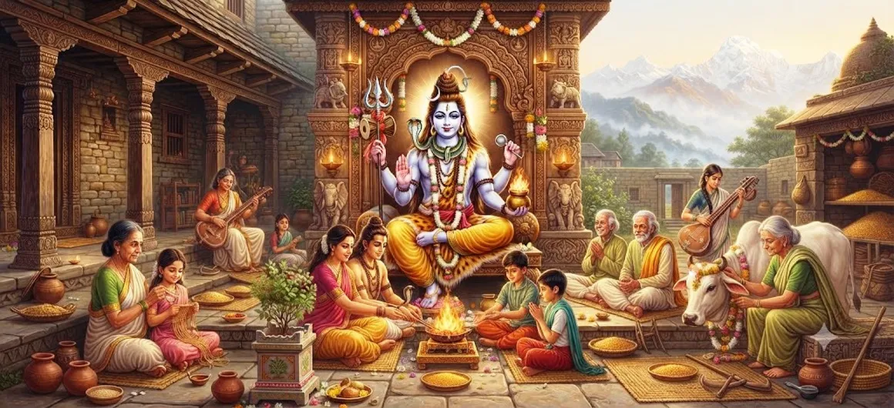

The Incarnation of Grihapati — Part 2
Chapter 14 of the Shatarudra Samhita continues the sacred narrative of Grihapati, following the account presented in the previous chapter.
The Grihapati manifestation provides a spiritual perspective on divine presence within household life. The responsibilities of the home, protection of others, discipline, service, devotion, and righteous conduct can all be understood through the sacred symbolism associated with Grihapati.
Part 2 continues this spiritual theme and gives devotees an opportunity to contemplate how divine consciousness can be reflected through responsibility, devotion, and disciplined conduct.
Chapter 14 Highlights
Continuation of Grihapati
Continues the sacred account of Grihapati from the preceding chapter.
Sacred Household
Reflects upon the spiritual importance of household responsibilities.
Protection and Care
Emphasizes care, protection, and responsible conduct toward others.
Devotion
Connects sincere devotion with everyday conduct and responsibility.
Spiritual Discipline
Encourages discipline and awareness in ordinary life.
Glory of Shiva
Reveals another dimension of the divine manifestations associated with Lord Shiva.
Core Topics in This Chapter
- 01 Continuation of the Grihapati Narrative →
- 02 The Divine Presence in Household Life →
- 03 Responsibility and Righteous Conduct →
- 04 Devotion Through Daily Life →
- 05 Protection, Care, and Service →
- 06 Discipline and Spiritual Awareness →
- 07 Grihapati and Dharma →
- 08 The Spiritual Message of Grihapati →
- 09 Guidance for Devotees →
- 10 Continuation in Part 3 →
Continuation of the Grihapati Narrative
Chapter 14 continues the account of Grihapati introduced in the preceding chapter. The narrative remains centered upon the sacred significance of this divine manifestation and the spiritual values represented by the Grihapati principle.
The continuation allows the devotee to look more deeply at the relationship between divine consciousness and the responsibilities of ordinary life.
The Divine Presence in Household Life
The Grihapati principle invites devotees to recognize that spiritual awareness can exist within the household. The home can become a place of remembrance, service, discipline, compassion, and devotion.
A sacred home is shaped by the conduct of those who live within it. Respectful speech, truthful behavior, patience, and mutual care can transform daily surroundings into an environment supportive of spiritual growth.
Responsibility and Righteous Conduct
Responsibility is an important part of household life. The Grihapati ideal connects responsibility with awareness, integrity, protection, and service rather than with authority alone.
Righteous conduct begins with the way people treat one another. When responsibilities are carried out honestly and compassionately, the household becomes a place where dharma can be practiced.
Devotion Through Daily Life
Devotion can be expressed through everyday actions. Remembering Shiva, serving others, keeping one's word, practicing patience, and acting with compassion are ways in which spiritual awareness can become part of ordinary life.
The Grihapati teaching therefore encourages devotees to see duty and devotion as complementary rather than separate aspects of life.
Protection, Care, and Service
A central responsibility within a household is caring for those who depend upon it. Protection is not merely physical. It also includes emotional support, guidance, compassion, and the preservation of harmony.
Through the Grihapati ideal, service becomes a practical expression of spiritual responsibility. Caring for others with sincerity can itself become an offering to the Divine.
Discipline and Spiritual Awareness
Spiritual discipline is expressed through consistency. A devotee who wishes to cultivate a sacred atmosphere must practice restraint, patience, truthfulness, and respect not only during worship but also during ordinary moments.
In this way, spiritual awareness becomes a habit of living rather than an occasional practice.
Grihapati and Dharma
Dharma is sustained through conduct. A household that values truth, responsibility, compassion, restraint, and service creates a foundation upon which spiritual and social harmony can grow.
Grihapati therefore represents a principle in which household responsibility is understood as part of the wider practice of dharma.
The Spiritual Message of Grihapati
The spiritual message of Grihapati is that ordinary life can contain sacred opportunities. Every responsibility can be approached with awareness, every relationship can be guided by compassion, and every act of service can be offered with devotion.
This perspective helps devotees understand that spiritual growth is not necessarily separated from family and social life. Instead, those very relationships and responsibilities can become a means of spiritual refinement.
Guidance for Devotees
Devotees can reflect upon the Grihapati principle by bringing greater awareness into their daily responsibilities. Serving family members, maintaining harmony, protecting those who need support, and speaking with kindness are simple but meaningful practices.
Regular remembrance of Lord Shiva can help connect these actions with devotion. The goal is to recognize the Divine not only in sacred places but also in the responsibilities and relationships of everyday life.
Continuation in Part 3
The sacred account of Grihapati continues in the following chapter. Part 3 carries the narrative forward and provides the next stage in the continuing sequence of this divine manifestation.
Readers following the Shatarudra Samhita chapter by chapter can continue directly to The Incarnation of Grihapati — Part 3.
Key Teachings of Chapter 14
Sacred Home
A home can become a place of spiritual practice through righteous conduct.
Devotion
Devotion can be expressed through sincere everyday actions.
Protection
Caring for and protecting others is an important expression of responsibility.
Dharma
Dharma begins with truthful and responsible conduct.
Discipline
Consistent discipline helps turn spiritual values into daily habits.
Service
Sincere service can become an expression of devotion to the Divine.
Spiritual Reflection
The continuation of the Grihapati narrative encourages a deeper reflection on the relationship between spiritual life and ordinary responsibility. A devotee does not need to separate every spiritual practice from daily life. The home itself can become a place of remembrance, service, discipline, compassion, and devotion. When family responsibilities are approached with sincerity and awareness, they can become opportunities for spiritual growth. Protection of others can become an expression of compassion. Honest work can become an expression of dharma. Patience within relationships can become an expression of self-control. Service can become an offering. In this way, the Grihapati principle reminds devotees that the sacred can be present in the ordinary when life is guided by devotion and righteous conduct.
Living the Message of Chapter 14
The message of Grihapati can be brought into daily life by treating responsibility as a form of service. Family members can be supported with patience, household duties can be performed honestly, and difficult situations can be approached with restraint and compassion.
Regular remembrance of Shiva can help keep these responsibilities connected with spiritual awareness. Even simple acts performed with sincerity can become meaningful expressions of devotion.
Key Spiritual Concepts
The lord or master of the household and a sacred manifestation associated with Lord Shiva.
Righteous conduct and responsibility that preserve harmony and sacred order.
Selfless service performed with sincerity and compassion.
Sincere remembrance, reverence, service, and dedication toward the Divine.
Conscious fulfillment of duties toward family, society, and those entrusted to our care.
Consistent practice of truthfulness, patience, self-control, compassion, and service.
Chapter Summary
Shatarudra Samhita Chapter 14 continues The Incarnation of Grihapati and develops the spiritual perspective introduced in the preceding chapter. The Grihapati principle connects divine awareness with household responsibility, protection, service, discipline, devotion, and dharma. The chapter encourages devotees to recognize that spiritual practice can be integrated into ordinary life. A home can become a sacred environment when its members practice truthfulness, compassion, patience, mutual respect, service, and responsibility. In this understanding, everyday duties do not have to stand apart from devotion. They can become opportunities to express devotion through action. The sacred narrative of Grihapati continues further in the next chapter, The Incarnation of Grihapati — Part 3.
Frequently Asked Questions
① What is the subject of Shatarudra Samhita Chapter 14?
Chapter 14 continues the sacred narrative of The Incarnation of Grihapati.
② What is the significance of Grihapati?
Grihapati represents the sacred principle associated with household responsibility, protection, service, discipline, devotion, and righteous conduct.
③ What does Part 2 of the Grihapati narrative explore?
Part 2 continues the account of Grihapati and develops the spiritual themes associated with divine presence, responsibility, devotion, discipline, and service.
④ How is the Grihapati principle relevant to devotees?
It encourages devotees to approach household responsibilities through devotion, discipline, service, protection, compassion, and dharma.
⑤ Can ordinary household duties become spiritual practice?
When performed with sincerity, responsibility, compassion, and devotion, ordinary duties can become meaningful expressions of spiritual practice.
⑥ What chapter comes after The Incarnation of Grihapati — Part 2?
The next chapter is The Incarnation of Grihapati — Part 3.
“When devotion enters daily responsibility, ordinary actions can become expressions of the sacred.”
Continue Through Shatarudra Samhita
Continue the sacred account of Grihapati from Part 2 to Part 3.